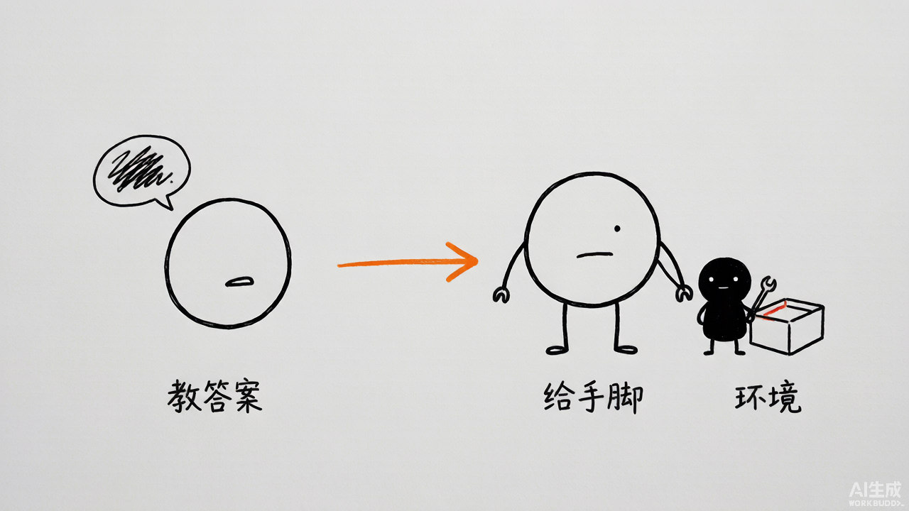
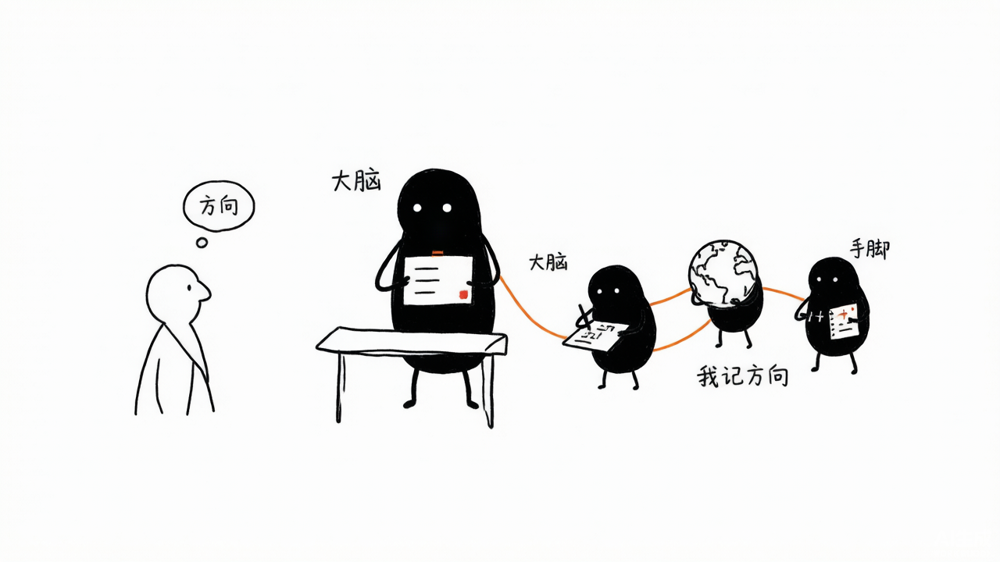

数据分析助手-最佳实践
Data Analysis Assistant: From Zero to Hero
创建者: 标叔 为谁创建: 想让 AI 自己写代码、调工具、上网查，却卡在"怎么搭"的开发者 基于: Geek04 项目 1 · CodeAct + Smolagents · 2026 最后更新: 2026-08-07 适用场景: 从零搭一个"会写代码"的智能体，一路进阶到多智能体编排 特别感谢: https://time.geekbang.org/column/intro/101170001
阅读指南
| 时间 | 章节 | 目标 |
|---|---|---|
| Day 1 | §01-§03 | 手搓一个能跑的 CodeAct |
| Day 2 | §04-§07 | 用 smolagents 把能力分层 |
| Day 3 | §08-§10 | 走到多智能体编排 |
Part 1: 起步
从零到一。读完你能让模型自己写代码、自己跑、自己改错。
§01 为什么你需要一个"会写代码的智能体"
01.1 时间线锚点
我用过很多"智能体"。最难受的是一类：它能说，不能做。
你问它"帮我分析这只股票"。它给你一段话。数据呢？没有。它算了吗？没算。它只是"猜"。
2026 年我拆 Geek04 项目 1 的时候，看到 02 codeact/agent.py。3845 字节。就这么点东西，干了一件关键的事——让模型自己写 Python，自己执行，自己看结果。
这一步跨过去，性质就变了。它从"嘴"变成"手"。
标叔的经验：CodeAct 不是某个框架
我最早以为 CodeAct 是 smolagents 的功能。错。CodeAct 是一种范式：智能体用"生成并执行代码"来和世界交互。
02 codeact用 OpenAI SDK 手搓了一个。这告诉我——范式比框架值钱。
01.2 它到底比传统工具调用强在哪
传统 tool-calling：你预先定义 N 个工具。模型只能在 N 个里选。遇到没定义的需求，它卡住。
CodeAct：模型自己写代码。理论上能干任何 Python 能干的事。
| 维度 | 纯 tool-calling | CodeAct |
|---|---|---|
| 能力边界 | 你定义多少，它做多少 | Python 能做的，它都能试 |
| 灵活性 | 低，工具是固定的 | 高，临时写代码 |
| 安全控制 | 强，白名单工具 | 弱，要管 exec |
| 实现成本 | 要逐个写工具 | 一个 execute_python 搞定 |
| 标叔的结论 | 稳定场景用它 | 探索性任务用它 |
重点看：最后一列。没有谁更好。是分工。
01.3 这本书要带你走到哪
读完，你能回答三个问题：
- 一个"自己写代码并执行"的智能体，核心循环长什么样？
- 拿现成框架 smolagents 重做，要分几层？
- 什么时候该单兵，什么时候该上多智能体？
01.4 适合谁
- 写过 Python，没碰过 Agent 的人
- 用过 LangChain，没自己搓过循环的人
- 想搞数据分析自动化、又嫌工具不够用的人
不适合谁：只想要一个聊天机器人的人。这本书全是"动手"。
装好了认知，下一章我们动手搓循环。
§02 手搓一个 CodeAct：20 行核心循环
02.1 先看全貌
02 codeact/agent.py 的骨架，我剥到最简：
from openai import OpenAI
client = OpenAI(api_key=..., base_url="https://api.minimaxi.com/v1")
TOOLS = [{"type": "function", "function": {
"name": "execute_python",
"description": "使用该工具执行Python代码",
"parameters": {"type": "object",
"properties": {"code": {"type": "string"}},
"required": ["code"]}}}]
def execute_python(code: str) -> str:
local_vars = {}
exec(code, {}, local_vars) # 关键：动态执行
return str(local_vars.get('result', '执行成功'))
def agent_loop(messages):
while True:
resp = client.chat.completions.create(
model="MiniMax-M2.7", messages=messages,
tools=TOOLS, tool_choice="auto")
msg = resp.choices[0].message
if msg.tool_calls: # 关键：模型要调工具
messages.append(msg)
for tc in msg.tool_calls:
r = execute_python(json.loads(tc.function.arguments)["code"])
messages.append({"role": "tool", "content": r,
"tool_call_id": tc.id})
else:
break # 不再调工具，结束
就这些。一个能"写代码→执行→回看→再改"的循环。
02.2 这循环里最关键的三个点
第一，exec。 exec(code, {}, local_vars) 把模型生成的字符串当代码跑。这是 CodeAct 的心脏。也是它最危险的地方。
第二，result 约定。 系统提示里要求模型把最终答案存进 result 变量。execute_python 读 local_vars['result']。这是个弱约定，但够用。
result = local_vars.get('result', '执行成功') # 关键：取结果
第三，回灌。 工具结果以 role: tool 塞回 messages。下一轮模型能看到自己代码跑出了什么。没这一步，它就是瞎写。
02.3 它会自己改错
这是最让我意外的地方。
模型写了代码，exec 报错。execute_python 把异常字符串返回去。下一轮，模型看到报错，自己改代码再跑。
agent_loop 里 max_rounds = 20。给它 20 次机会试错。我实测，多数任务 3-5 轮就收敛。
标叔的经验：把错误也喂回去
我最早把异常吞了，只返回"执行失败"。结果模型疯狂重试一样的代码。后来把完整 traceback 返回，它立刻知道自己错在哪。错误信息是它最好的老师。
02.4 终端美化是顺带的
utils.py 里 framed_print 给思考过程和答案画了个框，带 ANSI 颜色。用 wcwidth 处理中文字宽。
这跟智能体逻辑没关系。但它让调试体验好太多。你看得见它在想什么。
if msg.reasoning_details[0]['text'] != "":
framed_print("Thinking", msg.reasoning_details[0]['text'], "info")
核心建议：开发期把思考过程打出来
调试智能体最痛苦的是"它为什么这么干"。把 reasoning 显式打印，你能少花一半排查时间。
循环跑通了。下一章，给它一个真实任务。
§03 让它分析一只股票：akshare + exec
03.1 我们要做成什么
给它燕京啤酒（000729）的日 K 线数据，让它算均线、画图、出结论。
数据从哪来？stock_yanjing.py 用 akshare 拉：
import akshare as ak
df = ak.stock_zh_a_hist(symbol="000729", period="daily",
start_date=start_date, end_date=end_date, adjust="qfq") # 前复权
df.to_csv(csv_filename, index=False, encoding="utf-8-sig")
拉下来存成 CSV。这步是"喂数据"。
03.2 把数据丢给智能体
启动 agent.py，在 user >> 里输入：
读取 yanjing_beer_daily_k_*.csv，算 5/10/20/60 日均线，画一张带均线的 K 线图存成 PNG，再告诉我当前价相对均线偏离多少。
模型会自己写一段 pandas 代码，调 execute_python 跑，看到结果，再写画图代码，再跑。
我在项目里看到三个产物，全是它跑出来的：
| 产物 | 大小 | 说明 |
|---|---|---|
| yanjing_ma.png | 229 KB | 均线图 |
| yanjing_beer_ma.html | 4.9 MB | 交互式均线图 |
| yanjing_beer_kline_with_ma.html | 4.9 MB | 交互式 K 线+均线 |
标叔的结论：一个 execute_python，换回三件交付物。这就是 CodeAct 的杠杆。
03.3 踩坑记录
坑一：路径。 系统提示里写死了 你是一个在 {os.getcwd()} 目录下的。它是个 f-string？不，它没被 f-string 化——{os.getcwd()} 原样进了字符串。这是个 bug。模型不知道真实工作目录。
修法：
SYSTEM_MESSAGE = f"""你是一个在 {os.getcwd()} 目录下...""" # 关键：加 f
坑二：exec 的作用域。 exec(code, {}, local_vars) 传了空 globals。意味着标准库能 import，但跨轮的状态不保留。每轮都是干净的。这其实是对的——状态隔离。但你要让多步共享变量，得自己加状态层。
坑三：安全。 exec 跑任意代码。模型要写 os.system("rm -rf /") 也拦不住。本地玩没事。上生产必须上沙箱。
注意：exec 是把刀
这章的代码只能在你自己机器、自己信任的输入上跑。给别人用前，换成 Docker 或受限解释器。
02 codeact没做任何沙箱——它就是个教学样本。
手搓的循环，能跑了。下一章，换个轮子。
Part 2: 核心能力
深入 smolagents。把"写代码"和"调工具"分层。
§04 换个轮子：smolagents 的 CodeAgent
04.1 为什么要换
手搓的循环有个上限：状态管理、错误恢复、多步规划，全得自己写。
HuggingFace 的 smolagents 把这些封装好了。Geek04 的 03-04 Smolagents 就是用它重做。
04.2 最简形态：一行跑代码
test1/agent.py：
from smolagents import CodeAgent, OpenAIModel
model = OpenAIModel(model_id="qwen3.7-max", api_key=..., api_base=...)
agent = CodeAgent(tools=[], model=model, stream_outputs=False)
agent.run("计算1+2+3...+100的和") # 关键：CodeAgent 直接写代码算
注意 tools=[]。一个工具都不给。它照样能算——因为 CodeAgent 自带 Python 解释器，模型直接写代码跑。
这跟 02 codeact 的本质一样：模型生成代码并执行。区别是 smolagents 替你管了执行环境、错误重试、状态。
04.3 CodeAgent vs ToolCallingAgent
smolagents 给了两种 agent：
| 维度 | CodeAgent | ToolCallingAgent |
|---|---|---|
| 怎么干 | 写 Python 代码跑 | 调预定义工具 |
| 灵活度 | 高 | 受限于工具集 |
| 适合 | 探索、计算、数据处理 | 明确动作、外部调用 |
| 项目里谁在用 | 主智能体（test1/2/3/5） | 联网子智能体（test4/5） |
| 标叔的结论 | 当"大脑" | 当"手脚" |
标叔的经验：分工要按能力分
我一开始让 CodeAgent 自己联网搜索。它能写 requests 代码，但不稳。换成"CodeAgent 当经理，ToolCallingAgent 当联网专员"后，成功率明显上去。让代码型干计算，让工具型干调用。
04.4 OpenAIModel 接的是国产模型
model = OpenAIModel(
model_id="qwen3.7-max",
api_base="https://dashscope.aliyuncs.com/compatible-mode/v1")
通义千问。enable_thinking=False 在 ToolCallingAgent 上关掉思考，省钱提速。
核心建议：先关 thinking 跑通
调试阶段开思考会慢、会贵。先关掉把流程跑通，最后再开。test4 里就是这么干的。
CodeAgent 会跑代码了。但它还没有"手"。下一章给它工具。
§05 自定义工具：读 CSV、写 MD
05.1 为什么不直接让它写代码读文件
能。但每次都重写一遍 pandas 读 CSV 的样板，浪费且不稳。
工具化的好处：把"读 CSV"变成一个稳定、可复用的能力。模型一调就行。
05.2 smolagents 的 Tool 怎么写
test5/tools.py 里 ReadCSVTool：
from smolagents import Tool
class ReadCSVTool(Tool):
name = "read_csv"
description = "用于读取指定的 csv 文件"
inputs = {"file_path": {"type": "string", "description": "csv 文件的路径"}}
output_type = "any"
def forward(self, file_path: str): # 关键：执行逻辑在这
path = Path(file_path)
with path.open("r", encoding="utf-8-sig", newline="") as f:
return [row for row in csv.DictReader(f)]
四个要素：name、description、inputs、output_type，加一个 forward。模型靠 description 决定调不调。
WriteMDTool 同理，多了个 content 参数，还自动建父目录。
05.3 挂上去
agent = CodeAgent(tools=[ReadCSVTool(), WriteMDTool()], model=model)
test2 就这么干：让它分析 CSV、写 report.md。它先用 read_csv 拿数据，再写 pandas 代码算指标，最后用 write_md 落盘。
标叔的经验：description 决定一切
工具写成什么样，模型不一定用。description 写清楚，它才用对。我把"读取 csv"写成"用于读取指定的 csv 文件"，它每次都对路。模型读的是说明书，不是代码。
05.4 工具和代码可以共存
这是 smolagents 的妙处：CodeAgent 既有预定义工具，又能临时写代码。
它可能先 read_csv 拿数据，再写一段 matplotlib 代码画图。工具负责稳的，代码负责活的。
核心建议：稳的做工具，活的交代码
读文件、写文件、调 API——封装成工具。算指标、画图、临时统计——交给它的代码本能。别把所有事都塞进工具，也别全靠 exec。
工具挂上了。下一章，把工具搬出进程。
§06 接上 MCP：工具变成独立服务
06.1 这一步想解决什么
工具写死在 agent 进程里，有个问题：换一个 agent，得重写一遍工具。
MCP（Model Context Protocol）把工具变成一个独立服务。任何 agent 连上就能用。
06.2 项目里怎么做的
test3/tools.py 是个 MCP server：
from mcp.server.fastmcp import FastMCP
mcp = FastMCP("mcp common server", host="0.0.0.0", port=38000)
@mcp.tool()
def read_csv(file_path: str) -> list[dict]:
"""读取指定CSV文件的内容，返回包含字典的列表。"""
...
if __name__ == "__main__":
mcp.run(transport="streamable-http") # 关键：HTTP 起 服务
注意：函数还是那个函数。只是用 @mcp.tool() 暴露成网络工具。跑起来是个 38000 端口的 HTTP 服务。
06.3 agent 怎么连
test3/agent.py：
from smolagents import MCPClient
with MCPClient({"url": "http://127.0.0.1:38000/mcp",
"transport": "streamable-http"}) as tools:
agent = CodeAgent(tools=tools, model=model) # 关键：远程工具当本地用
agent.run("分析 CSV，写 report.md")
对 agent 来说，远程工具和本地工具没区别。tools=tools 一塞就完事。
| 维度 | 本地工具（test2） | MCP 工具（test3） |
|---|---|---|
| 部署 | 同进程 | 独立服务 |
| 复用 | 换 agent 要重写 | 多 agent 共用 |
| 通信 | 函数调用 | HTTP |
| 标叔的结论 | 原型快 | 要共享就上 MCP |
标叔的经验：MCP 的杠杆在复用
我给三个不同 agent 都要"读 CSV"。本地写三遍。改成 MCP server 后，三个 agent 连同一个。工具从"私产"变成"公共服务"。
MCP 把工具搬出去了。下一章，给 agent 一种"不写代码"的能力。
§07 ToolCallingAgent：不写代码，只调工具
07.1 为什么需要它
有些任务，写代码是杀鸡用牛刀。
比如"联网搜索燕京啤酒的新闻"。你不需要它算什么。你需要它调一个搜索 API，把结果拿回来。
这种场景，ToolCallingAgent 更合适——它不 exec 代码，只调工具。安全、快、省 token。
07.2 项目里的联网子智能体
test5/subAgent.py：
web_search_agent = ToolCallingAgent(
name="web_search_agent",
description="可以根据用户的问题，进行联网搜索，返回搜索结果",
tools=[BoChaWebSearch()],
model=model,
max_steps=10) # 关键：最多 10 步
它只有一个工具：BoChaWebSearch，调博查搜索 API：
class BoChaWebSearch(Tool):
def forward(self, query: str) -> str:
data = {"query": query, "summary": True, "count": 10, "page": 1}
resp = requests.post("https://api.bochaai.com/v1/web-search",
headers={"Authorization": f"Bearer {API_KEY}"}, ...)
return [{"title":..., "summary":..., "url":...} for ...]
返回标题、摘要、链接的列表。
07.3 max_steps 是保险
max_steps=10。防止它绕圈调工具烧钱。CodeAgent 那边 max_rounds=20 是同理——都要设上限。
注意：一定要设步数上限
没上限的 agent，遇到死循环会把 API 额度跑光。我吃过亏。10 步够干大多数事了。
手脚齐了。下一章，让大脑指挥手脚。
Part 3: 进阶实战
从单兵走向团队。这是质的跳跃。
§08 多智能体编排：经理 + 联网子智能体
08.1 这一章是全书的高潮
test5/agent.py 把前面所有东西拼到了一起：
agent = CodeAgent(
tools=[ReadCSVTool(), WriteMDTool()], # 自己的手：读写文件
model=model,
managed_agents=[web_search_agent] # 关键：管一个子智能体
)
agent.run(prompt) # 分析燕京啤酒，出 Markdown 报告
一个 CodeAgent，当经理。它管一个 ToolCallingAgent——联网专员。
08.2 它怎么协作
prompt 要求：读本地 K 线 → 搜最新资讯 → 结合 → 出报告。
我推断的流程：
- 经理用
read_csv读燕京 K 线。 - 经理写 pandas 代码算均线、涨跌、波动。
- 经理把"搜燕京啤酒近期新闻"这个子任务，委派给
web_search_agent。 - 子智能体调博查搜索，返回新闻摘要。
- 经理把技术面数据 + 基本面资讯结合，写报告。
- 经理用
write_md落盘成 report.md。
产物就是 03-04 Smolagents/report.md。一份结构完整的燕京啤酒投资分析——基本面、技术面、机构评级、风险提示，全有。
08.3 managed_agents 的本质
managed_agents 不是"再开一个 agent 窗口"。是委派。
经理把活分下去，子智能体干完，结果回到经理手里。经理决定怎么用。子智能体不直接面对用户。
标叔的经验：委派比并行更稳
我试过让两个 agent 同时跑再合并。结果对不上。改成"经理委派→回收→统一"后，报告一致性立刻上来。多智能体的关键不是多，是有一个主。
08.4 这就是数据分析助手
到这一步，"数据分析助手"成型了：
- 会读数据（工具）
- 会算会画（代码本能）
- 会联网（子智能体）
- 会统筹出报告（经理）
从 02 codeact 的 3845 字节，到 test5 的多智能体，这条路走完了。
一句话总结：
阶段 干什么 谁干 手搓 exec 跑代码 一个循环 单兵 工具+代码 一个 CodeAgent 联网 子智能体 ToolCallingAgent 团队 经理统筹 managed_agents
下一章复盘这条线。
§09 复盘：从单兵到团队，那条分界线在哪
09.1 五个测试是一条进化线
| 测试 | 形态 | 关键代码 | 学到啥 |
|---|---|---|---|
| test1 | CodeAgent 空工具 | agent.run("算1..100") |
CodeAgent 自带解释器 |
| test2 | +自定义工具 | tools=[ReadCSVTool, WriteMDTool] |
稳的封装成工具 |
| test3 | +MCP | MCPClient({url}) |
工具变服务可复用 |
| test4 | ToolCallingAgent | tools=[] 跑搜索 |
不写代码更安全 |
| test5 | +managed_agents | managed_agents=[web_search_agent] |
经理委派子智能体 |
重点看：每一格只多一个能力。这就是好的教学顺序。
09.2 什么时候该加层
我的判断标准：
- 需要稳定复用 → 封装成工具
- 需要多 agent 共用 → 上 MCP
- 需要隔离风险 → 换 ToolCallingAgent
- 需要统筹多源 → 上 managed_agents
不要一上来就上全套。test1 能跑通的，别急着 test5。
09.3 单兵的上限
单兵 CodeAgent 能干很多事。但有两个天花板：
- 上下文爆炸。 数据、搜索结果、代码全堆在一个 agent 的记忆里，撑不住。
- 职责混乱。 又算数又搜索又写报告，容易顾此失彼。
到了这两点，就该分家。
核心建议：先单兵跑通，再拆团队
别一上来就多智能体。先让一个 agent 把全流程跑通，哪怕糙。跑通了，你才知道哪里该拆、怎么拆。
分界线讲清了。最后一章，换个脑子。
§10 思维转变：不要教模型答案，要给它手脚


10.1 这本书真正的转折点
很多人用 AI 的方式是"教它答案"：把资料喂进去，让它复述。
CodeAct 这套，思路反过来——不给答案，给手脚。
你不告诉它均线怎么算。你给它一个能跑代码的环境。它自己会。
10.2 三个转变
转变一：从"提示词"到"环境"。 与其打磨一句话，不如搭好工具和沙箱。环境对了，模型自然对。
转变二：从"我写"到"它写"。 你不再写业务代码。你写工具。模型写胶水代码。
转变三：从"一个能干的"到"一群各司其职的"。 单兵有上限。学会拆——大脑一个，手脚若干。
10.3 真正省的不是时间，是注意力
用这套之后，我省掉的不是写代码的时间。是"记着所有细节"的注意力。
模型记数据。子智能体记新闻。我记方向。
标叔的经验：最高级的自动化是分工
我以为自动化是"让机器替我干活"。其实更准的说法是"让机器各自干活、我居中调度"。项目 1 这五个测试，把这层窗户纸捅破了。
思维变了，剩下的就是练。
附录
A 核心 API 速查
| 框架 | 类/函数 | 作用 |
|---|---|---|
| openai | client.chat.completions.create(tools=, tool_choice=) |
带工具的对话 |
| openai | exec(code, {}, local_vars) |
动态执行代码 |
| smolagents | CodeAgent(tools=, model=, managed_agents=) |
代码型智能体 |
| smolagents | ToolCallingAgent(tools=, model=, max_steps=) |
工具型智能体 |
| smolagents | Tool 子类（name/description/inputs/forward） |
自定义工具 |
| smolagents | MCPClient({url, transport}) |
连 MCP 服务 |
| FastMCP | @mcp.tool() + mcp.run(transport=) |
起 MCP 服务 |
| akshare | ak.stock_zh_a_hist(symbol, period, adjust) |
拉 A 股 K 线 |
B 这本书没讲但你应该继续看的
- smolagents 的
planning_step：让 agent 先列计划再执行。 - 沙箱执行：用 Docker 或 E2B 替换裸 exec。
- 记忆与状态：跨会话怎么保留上下文。
⚠️ 免责声明：本书基于 Geek04 开源代码解读，代码样本仅作教学。投资分析示例不构成任何投资建议。
附录 C：DeepWiki 官方架构图 / 流程图 / 设计图（深度解读补充）
以下内容来自 DeepWiki 对
xingyunyang01/Geek04的自动深度解读（Mermaid 源码），作为本书架构与流程的权威参考补充。在支持 Mermaid 的 Markdown 阅读器（GitHub / Obsidian / VS Code + Mermaid 插件）中会自动渲染为图。
C.1 [全局] Core Agent Framework Mapping
C.2 [全局] Shared Infrastructure & Tooling
C.3 [全局] The CodeAct Execution Pattern
C.4 [全局] Model Configuration Mapping
C.5 System Evolution Diagram
C.6 Data Flow: Natural Language to Code Execution
C.7 Core Components and Data Flow
C.8 Visualization and Outputs
C.9 Entity Mapping: Natural Language to Code
C.10 Multi-Agent Data Flow
graph/sequence/class 的「DeepWiki 架构图」需联网由 Mermaid 渲染，
离线时显示原始源码，不影响阅读。